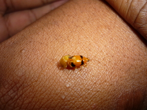

ahad1 
/ʔagad/
v_rt.
“copulate”
vt.
for a male animal (but not a person) (eg-ahad, mig-ahad/in-ahad, ahad, agent, eg><ø-) to copulate with a female (eg-aharen, in-ahad/mig-ahad/pig-ahad, ahara, theme, eg><en-)
Wrd.Gloss: copulate
Mania te kenè mulè eg-ahad ka lumansad ku te upa?
Why doesn't my rooster mate with a hen?
O. Syn. abid
Eng. copulate, an male animal to (e.g., usually animals); sexual intercourse, a male animal to have (e.g., usually animals); intercourse, a male animal to have sexual (e.g., usually animals); mate, a male animal to (e.g., usually animals)
OCM: Ethnozoology (825)
DDP: Animal life cycle (1.6.3), Sexual relations (2.6.2)
Online dict status: -
Usage level: M
v.
for a female animal (egpaahad, migpaahad/impaahad, paahad, agent, eg><ø-pA-) to not run away from a male animal (egpaaharen, impaahad/migpaahad/pigpaahad, paahara, patient, eg><en-pA-) (egpaaharan, impaaharan/migpaaharan/pigpaaharan, paahari, location, eg><an-pA-) thus allowing him to proceed with copulation
Data Qual: check the semantic roles in this - should -en and -an signify a similar role
Egpaahad e ka manuk ku.
My chicken already wants to be mated with.
Eng. mate, female animal to; allow mating, female animal to
OCM: Ethnozoology (825)
DDP: Animal life cycle (1.6.3)
Online dict status: -
Usage level: M
v.
for male and female animals (egpaag-aharey, migpaag-aharey/impaag-aharey, paag-aharey, agent, egpA><ey-rdpCV-) to have sexual intercourse
Cult. This is a derogatory term
Eng. sexual intercourse, have; intercourse, have sexual; copulate (e.g., usually animals)
OCM: Sexual Intercourse (833)
DDP: Sexual relations (2.6.2)
Online dict status: -
Usage level: RS
vi.
for a woman or female animal (egpaahad-ahad, migpaahad-ahad/impaahad-ahad, paahad-ahad, agent, egpA-rdpRT-) to wait anybody or any rooster to have sex (e.g., usually animals)
Egpaahad-ahad e mulè ka manuk ku te minsan nekey ne lumansad.
My chicken is wanting to mate with any rooster.
Eng. solicit sex (e.g., usually animals); prostitute
OCM: Ethnozoology (825), Sexual Intercourse (833)
DDP: Animal life cycle (1.6.3), Sexual immorality (2.6.2.3)
Online dict status: -
Usage level: RS
Updated by: RJH,AAA,AAA,RUL,AAA,RJH,NJK,QDL,NJK,RAA,QDL,NJK,QDL,NJK,RJH
Last updated: 31/Aug/2015
"ahad" in text "Cooking in Bamboo"
"ahad" in text "Prophecy About Future"
"ahad" in text "The Barrio Fiesta (Egsahakeen) and Castration"
"ahad" in text "Making Lead Sinkers"
This page last updated: 03-Jan-2020
Copyright © 2009-2014, Matigsalug Language Christian Association, Inc